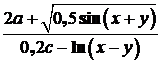
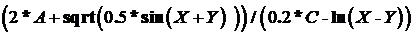
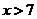

Структура программы на языке программирования Паскаль
Структура программы, написанной на Турбо Паскале, состоит из заголовка программы и двух основных частей: раздела описаний и раздела операторов.
PROGRAM Name; {Заголовок программы} {Раздел описаний} BEGIN {Раздел операторов} END.
Слово PROGRAM зарезервировано в Pascal и используется для объявления имени программы. Заголовок программы необязателен и игнорируется компьютером.
Каждая операция описания, как и любое действие оператора, заканчивается символом « ; ».
Этот разделитель в языке Pascal отмечает конец оператора или описания. Использование особого разделителя позволяет располагать несколько операторов в одной строке.
Зарезервированное слово BEGIN сигнализирует компилятору о начале другой части программы – раздела операторов. Завершает всю программу зарезервированное слово END. Точка оповещает компилятор о конце текста программы.
Обязательной частью являются лишь тело программы (раздел операторов). Заголовок программы является хотя и необязательным, но желательным элементом.
Раздел описаний
Раздел описаний состоит из следующих подразделов:
· Подключение внешних модулей, необходимых для использования хранящихся в них наборов констант, типов данных, переменных, процедур и функций, которые можно использовать в своей программе;
· Описание меток, используемых в программе;
· Описание констант, объявляются идентификаторы, которые не могут изменять своего значения в «теле» программы. Исключение составляют лишь типизированные константы;
· Задание типов, определение идентификаторов типов для дальнейшего их использования;
· Объявление переменных, описываются идентификаторы, которые могут изменять свои значения в "теле" программы;
· Описание функций и процедур, содержит процедуры и функции, написанные программистом.
PROGRAM Name; {Заголовок программы} Uses <имена модулей>; {Раздел подключения модулей} {---------- РАЗДЕЛ описаний ----------} Label {Раздел описания меток} <имя метки>; Const {Раздел описания констант} <имя константы>= <значение>; <имя константы>:<тип>=<значение>; Type {Раздел описания типов} <имя типа>=<тип>; Var {Раздел описания переменных} <имя переменной>:<тип>; Function <имя > (параметры); {Раздел описания функций и процедур} …………… end; Procedure <имя > (параметры); {Раздел описания функций и процедур} …………… end; BEGIN {Раздел операторов} END.
Порядок размещения подразделов произвольный, можно создавать несколько одинаковых подразделов.
Раздел операторов
Раздел операторов содержит все операторы (команды), которые будут выполнены во время запуска программы, выделяется словами
BEGIN {Раздел операторов} END.
После END ставится точка, что означает конец программы. Всё, что в дальнейшем буден написано после «END.» не воспринимается компилятором, и соответственно, будет проигнорировано в процессе исполнения программы.
Алфавит языка. Лексика языка
Язык программирования Turbo Pascal (как и любой другой язык) образуют три его составляющие: алфавит, синтаксис и семантика.
Алфавитом языка называют совокупность всех допустимых символов, которые можно использовать в этом языке.
Синтаксис – система правил для записи допустимых конструкций языка программирования.
Семантика определяет смысловое значение предложений языка.
Основными понятиями в языках программирования обычно являются алфавит языка, константы, переменные, встроенные функции, логические и арифметические выражения.
Алфавит языка Паскаль включает:
- Прописные и строчные буквы латинского алфавита от A до z. Нет различий между заглавными и строчными буквами при их использовании для определения имен идентификаторов, кроме случая, когда слово связано с текстовыми константами;
- Символ подчеркивания ( _ ), который тоже считается буквой;
- Арабские цифры 0 1 2 3 4 5 6 7 8 9;
- Знаки арифметических операций: + - * / ^
- Специальные символы: . , : ; { } [ ] ( )% # ! $ & @
- Буквы русского алфавита используются только для записи текстовых констант и комментариев к программе.
Следующие комбинации специальных символов являются едиными символами, которые нельзя разделять пробелами:
:= |
знак присваивания; |
>= |
больше или равно; |
<= |
меньше или равно; |
<> |
не равно; |
(* *) |
ограничители комментариев (наряду с { }); |
(. .) |
эквивалент [ ] |
Пробелы — это символ пробела (ASCII-32) и все управляющие символы кода ASCII (от 0 до 31).
К специальным символам относятся также служебные (зарезервированные) слова, смысл которых определен однозначно и которые не могут быть использованы для других целей. Для языка — это единые символы.
Служебные слова языка Турбо Паскаль: absolute, and, array, begin, case, const, div, do, downto, else, end, external, file, for, forward, function, goto, if, implementation, in, inline, interface, interrupt, label, mod, nil, not, of, or, packed, procedure, program, record, repeat, set, shl, shr, string, then, to, type, unit, until, uses, var, while, with, xor.
Последние версии языка Турбо Паскаль содержат также ряд служебных слов, относящихся к работе с объектами и встроенным ассемблером.
Идентификаторы
Идентификатором называется символическое имя определенного программного объекта. Идентификатор - произвольная последовательность латинских букв, арабских цифр и символов подчеркивания. Идентификатор необходим для обозначения основных объектов языка: константы, переменные, типы данных, процедуры, функции, программы.
В языке программирования Паскаль нельзя использовать в качестве идентификаторов:
· зарезервированные слова (выделяются белым цветом);
· имена встроенных процедур и функций;
· имена, начинающиеся не с латинской буквы или не с символа подчеркивания;
· имена, содержащие символы кроме латиницы, арабских цифр и символа подчеркивания;
· слова, разделенные пробелом.
Строчные и прописные буквы в идентификаторах и служебных словах не различаются.
Длина идентификатора ограничена длинной программной строки (126 символов), но компилятор различает только первые 63 символа.
Комментарии
Конструкции следующего вида представляют собой комментарии и, поэтому, игнорируются компилятором:
(любой текст, не содержащий символ «}»}
(* любой текст, не содержащий символы «*)» *)
Например:
//Комментарий 1
{Комментарий 2}
Комментарий, содержащий знак $ после открывающей скобки является директивой компилятора.
Например:
{$I+}-проверка ошибок ввода/вывода;
{$R+}-проверка границ переменных;
Комментарий может располагаться в любом месте программы.
Типы данных языка программирования Турбо Паскаль
Любые данные Турбо Паскаля характеризуются своими типами. Тип определяет:
- Формат представления данных в памяти компьютера;
- Множество допустимых значений, принимаемое переменной или константой, принадлежащей к выбранному типу;
- Множество допустимых операций применимых к этому типу;
Тип переменной определяется при ее декларации. Одна из базовых концепций Паскаля заключается в жесткой проверке соответствия типов в операциях присваивания.
Типы данных в языке ТП делятся на 5 основных классов:
- Простые типы;
- Структурированные типы;
- Ссылочные типы;
- Процедурные типы;
- Объектные типы;
Простые типы данных
К простым типам данных относятся числовые (целые и вещественные) типы, логический, символьный, перечисляемый и диапазонный (интервальный) тип.
Типы данных Турбо Паскаля
Идентификатор |
Длина, байт |
Диапазон (множество) значений |
Целые типы |
||
Byte (целое длиной в байт) |
1 |
0..255 |
Word (длиной в слово) |
2 |
0..65535 |
Shortint (короткое целое) |
1 |
-128..127 |
Integer (целое) |
2 |
-32768..32767 |
Longint (длинное целое) |
4 |
-2147483648..2147483647 |
Вещественные типы |
||
Real |
6 |
2,9Е-39 – 1,7Е+38 (11 – 12) |
Single |
4 |
1,5Е-45 – 3,4Е+38 (7 – 8) |
Double |
8 |
5,0Е-324 – 1,7Е+308 (15 – 16) |
Extended |
10 |
З,4Е-4932 – 1,1Е+4932 (19 – 20) |
Логический тип |
||
Boolean |
1 |
True, False |
Символьный тип |
||
Char |
1 |
Все символы кода ASCII |
Перечисляемый тип данных задается перечислением всех значений, которые может принимать переменная данного типа. При описании отдельные значения указываются через запятую, а весь список заключается в круглые скобки.
Например:
Var Month: (May, June, July, August);
Диапазонный (интервальный) тип представляет собой подмножество значений целого, символьного или перечисляемого типа и описывается в виде a..b, где a – нижняя граница, b – верхняя граница диапазона.
Например:
Var a: 0..10;
b: 'a'.. 'b';
Тип, на основе которого строится диапазонный тип, называется базовым для этого диапазонного типа.
Выражения и операции. Оператор присваивания. Правила записи выражений и операций
Арифметические операции
К арифметическим типам данных относятся группы вещественных и целых типов данных. К ним применимы арифметические операции и операции отношений.
Различают операции над данными унарные (применимые к одному операнду) и бинарные (применимые к двум операндам).
Унарная арифметическая операция одна — это операция изменения знака следующего формата:
— <величина>.
Бинарные арифметические операции стандартного языка Паскаль описаны в таблице, где I - данные целого типа, a R - вещественного.
Знак |
Выражение |
Типы операндов |
Тип результата |
Операция |
+ |
A+B |
R,R I,I I,R; R,I |
R I R |
Сложение |
- |
A-B |
R,R I,I I,R; R,I |
R I R |
Вычитание |
* |
A*B |
R,R I,I I,R; R,I |
R I R |
Умножение |
/ |
A/B |
R,R I,I I,R; R,I |
R R R |
Деление |
div |
A div B |
I,I |
I |
Целочисленное деление |
mod |
A mod B |
I,I |
I |
Остаток от целочисленного деления |
Арифметическое выражение задает порядок выполнения действий над числовыми величинами. Арифметические выражения содержат арифметические операции, функции, операнды, круглые скобки. Одна константа или одна переменная — это простейшая форма арифметического выражения.
Например, математическое выражение

записанное по правилам языка Паскаль будет иметь вид
 .
Стандартные математические функции ТурбоПаскаля
Обращение |
Тип аргумента |
Тип результата |
Примечание |
R, I |
R, I |
Модуль аргумента x |
|
R, I |
R |
Арктангенс x,(значение в радианах) |
|
R, I |
R |
Косинус x, угол в радианах |
|
R, I |
R |
 - экспонента x |
|
R |
R |
Дробная часть числа |
|
R, I |
R |
Целая часть числа |
|
R, I |
R |
Логарифм натуральный числа |
|
- |
R |
3,141592653 |
|
R, I |
R |
Синус x, угол в радианах |
|
R, I |
R, I |
Квадрат числа |
|
R, I |
R |
Корень квадратный из числа |
|
- |
R |
Псевдослучайное число в интервале [0, 1] |
|
Random(I) |
I |
I |
Псевдослучайное число в интервале [0, I] |
R |
I |
Округление до ближайшего целого |
|
R |
I |
Отбрасывание дробной части числа, ближайшее целое, не превышающее число по модулю |
|
I |
I |
Целая часть числа при делении |
|
I |
I |
Остаток от деления |
Правила записи выражений и операций
При записи арифметических выражений необходимо придерживаться следующих правил и ограничений:
- Все символы выражения записываются в одну сторону, т.е. на одном уровне. Запрещены многоэтажные выражения и верхние и нижние индексы.
- Два знака арифметических операций не должны располагаться рядом. Знак умножения опускать нельзя.
- Операции в арифметическом выражении выполняются в порядке приоритета. Порядок убывания приоритетов операций следующий:
1) вычисление функций;
2) унарная операция смены знака (-);
3) возведение в степень;
4) умножение и деление;
5) целочисленное деление;
6) деление по модулю;
7) сложение и вычитание.
- Операции равного старшинства выполняются по порядку слева направо.
- Часть выражения, заключенная в скобки, вычисляется в первую очередь.
- Не следует записывать выражения, не имеющие математического смысла, например: деление на нуль, логарифм отрицательного числа и т.п.
Тип арифметического выражения определяется типом ее результата.
Инструкция